Fokus på människor och roller
Transformation sker när människor går utanför gränser, möts för att lära, skapa och förändra tillsammans. I informella samarbeten, storslagna initiativ, skunk work eller små hack som kan rucka på systemen.
När organisationer ska göra en förändringsresa så är det dock inte ovanligt att man fokuserar på planerade processer, färdigpaketerade metoder och standardutbildningar som implementeras brett. Även om man vet att det är en förenkling så kommer den här typen av linjära tankesätt fram i förväntningar, utvärdering av initiativ eller när försöker sig på att mäta framgång, och man behandlar ibland människor som om de vore helt utbytbara.
Vi vill här sätta fokus på människor – av kött och blod, och med känslor – och därmed vikten av att förstå dem. Därför behöver vi också förstå den systemkontext de interagerar med och påverkas av, och hur de samspelar med varandra. Men också sätta fokus på dig, vad du vill och kan göra, och hur du förhåller dig till andra i transformation. Hur ser du på din roll?
I det här kapitlet beskriver vi transformation som något som växer fram med människor i centrum. Vi tar upp olika typer av roller, vikten av engagemang och hur man kan kanalisera det, samt motstånd och personliga agendor. Vi tar också upp transformation som en social process, och vikten av meningsfullhet, relationer och tillit.
Kapitel 7 handlar sedan om allt det där knöliga som sker i och mellan organisationer, och som man kan navigera smart för att driva transformation.
System förändras när människor gör
Exempel:
I ett forskningsprojekt om cirkulär transformation i samhällsbyggnadsbranschen var tanken att representanter från stora bolag med nyckelpositioner inom sektorn skulle mötas för samlärande och utforskande av nya cirkulära affärsekosystem och innovativa affärsmodeller.
Det som blev uppenbart var att genombrott och viktiga insikter hängde ihop med vem som var i rummet och hur möten faciliterades – inte så mycket med planen och metodiken.
Allt som deltagarna kom in med – kunskap och mandat, den komplexitet som fanns i både personliga och organisatoriska relationer, de logiker som styrde deras respektive bolag, deras personliga drivkrafter och tidigare erfarenheter, var nycklar till vad som åstadkoms i projektet.
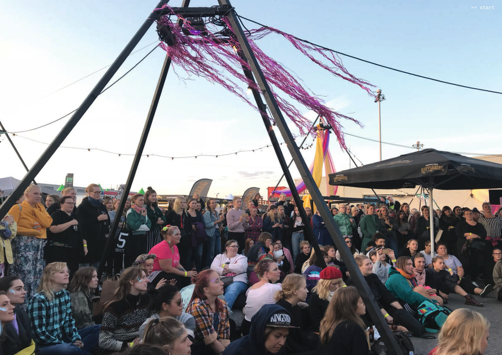
En musikfestival av, med och för kvinnor, transpersoner och icke-binära. Den var ett tydligt ställningstagande mot sexuellt våld och för en tryggare festivalmiljö. En uppmaning till samhället att ta ansvar för att skapa tryggare offentliga rum för alla. Att den var separatistisk kritiserades hårt – samtidigt vittande besökare om en unik upplevelse som möjliggjordes av arrangörer som kämpade för sin vision.
En sammanflätning av aktörer, kontext och handlingar
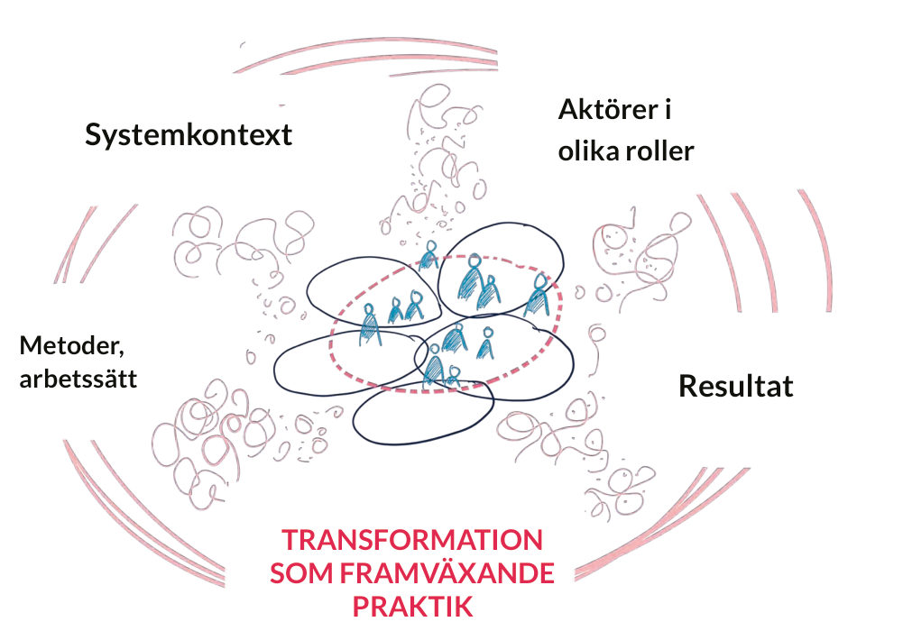
Kärnan i transformation ligger i handlingar som utförs av människor – i sammanhang som de påverkar och påverkas av. Detta behöver synliggöras, och om vi benar upp det lite så ser vi att:
Aktörer – alltså människor – i olika roller är centrala. De är inte anonyma och utbytbara, utan kommer in med erfarenheter, systeminsikter, relationer, engagemang, kunskap, empati, nyfikenhet och förmåga att navigera system.
De här människorna befinner sig i en systemkontext som innefattar logiker, processer, strukturer, interaktioner och alla de komplexa samband som skapar hinder och möjligheter för det människor försöker åstadkomma – se trädet vi visat på ett par bilder. Inom en organisation kan det vara till exempel: ledarskap, strategi, gammalt groll, ett traditionellt arv, vilka beteenden som premieras eller tillgängliga resurser. Den större samhällskontexten spelar in – alltså alla de lager av systemnivåer som nämnts här i boken och hur de interagerar.
Aktörernas handlingar stöttas av metoder och arbetssätt som existerar, modifieras och ändras över tid. Exempelvis verktyg, rutiner och processer från design, konst, strategi, innovation eller förändringsledning. Det kan också handla om mötesplatser eller teknologi som används på olika sätt av aktörerna.
Ur ansträngningarna växer det fram resultat – såsom insikter, förmågor, relationer, nätverk, strukturer, nya typer av ledarskap, alternativa arbetssätt, och nya sätt att finna och skapa mening.
Allting hänger ihop – resultaten påverkar i sin tur aktörerna, kontexten och praktikerna, genom att skapa sånt som legitimitet eller nya möjligheter.
Viktiga roller i transformation
I kapitel 3 presenterades Wheatley och Friezes två-loopsmodell som visar transformation som två parallella processer – det nya som växer fram och det gamla som dör.
Det nya systemet möts ofta av motstånd från det gamla, eftersom det nya utmanar den rådande logiken. Även om aktörerna försöker bygga något nytt, är deras angreppssätt ofta motsatt gentemot det gamla systemet, vilket kan skapa en spänning mellan dessa två världar.
Flera roller som bidrar till, påverkar och påverkas av transformation kan utkristalliseras, både i det gamla och det nya. Exempelvis:
- Pionjärer: De som driver det nya genom att hitta nya vägar. Entreprenörer, aktivister, konstnärer, science fiction-författare och andra, identifierar brister i det gamla systemet och ser möjligheter att göra saker annorlunda. De krokar arm och bildar nätverk och sammanhang där det nya växer fram.
- Möjliggörare / Stewards: Individer inom det gamla systemet (formella ledare, beslutsfattare) som ändå skapar förutsättningar för det nya att växa fram, genom att stötta och skydda pionjärer, och genom att hantera toxiska element. Möjliggörare hjälper till att skapa en lockande vision av det framväxande systemet.
- Hospice-arbetare: En speciell form av möjliggörare som stöttar det gamla att avvecklas på ett icke-kaotiskt, värdigt och så lindrigt sätt som möjligt.
- Hindrare: De som sätter sig på tvären medvetet såväl som omedvetet, när det gamla systemet försöker försvara sig självt.
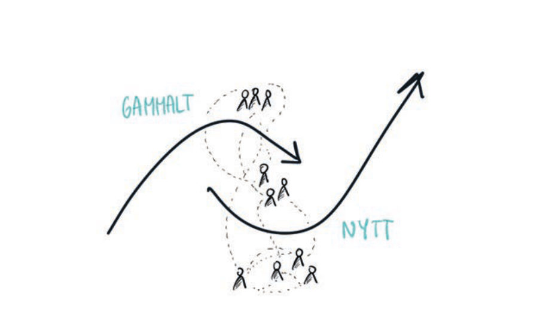
- Tidiga följare / Early adopters: De som bidrar till att skapa momentum, genom att tidigt anamma det nya systemet. När förtroendet för det nya växer följer den stora massan efter. Ett exempel är övergången till smartphones. Någon gång i början av 2010-talet blev det standard för de flesta att ha en iPhone eller Android-telefon. Just nu ser vi användandet av generativ AI vara i början av den kurvan.
- Samhällsmedborgare i allmänhet: transformation och samhällsutveckling är något som långsamt och gradvis växer fram, gödslat av starka relationer och omsorg. Detta sker när människor bidrar till att skapa nya sociala strukturer genom att utveckla meningsfulla relationer, nya förmågor och gemensamma nya världsbilder. Det kan vara en svår resa.
- Facilitatorer: Aktörer (ofta utanför organisationer) som stöttar olika aspekter av transformationen med ett systemperspektiv.
Roller kan överlappa - beroende på situation så kan en person ikläda sig flera. I kapitel 7 och 8 går vi in på hur man kan bidra till transformation som pionjär, möjliggörande ledare och faciliterande aktör.
.
Guldreserven: alla vi som går till jobbet för att åstadkomma förändring.
Det finns outnyttjad guldreserv i det samhällsengagemang som människor varje dag tar med sig till sitt arbete. Systemisk transformation utgörs av människorna i systemet, och det är deras vilja och motivation som är bränslet. De som är orienterade runt sitt uppdrag och som vill något.
Just hos människor i systemet finns en enorm potential, som handlar om vad man vill och kan åstadkomma - inte om hur man har organiserat sig i sina strukturer och arbetssätt.
En fragmenterad och bristande ansvarskänsla är inte sällan en konsekvens av ett överdrivet internt fokus på organisering, resurser och mandat. Det faktum att många chefer eller nyckelfunktioner är orienterade mot resurs, organisation och mandat - medan medarbetare är orienterade mot syfte och uppdrag – kan i sig skapa ett gap mellan chefer och medarbetare.
”Åker du till en polisstation i någon del av Sverige möter du människor som gått till jobbet för att de vill åstadkomma nytta i samhället. Såklart i olika utsträckning och av olika orsaker, men den gemensamma nämnaren är väldigt sällan organisationen per se. Man söker sig liksom inte till Polisen av en längtan till Polismyndighetens inre liv och processer, utan snarare utifrån en tro på att göra gott i samhället. Den uppgiften är alltid större än organisationen i sig självt."
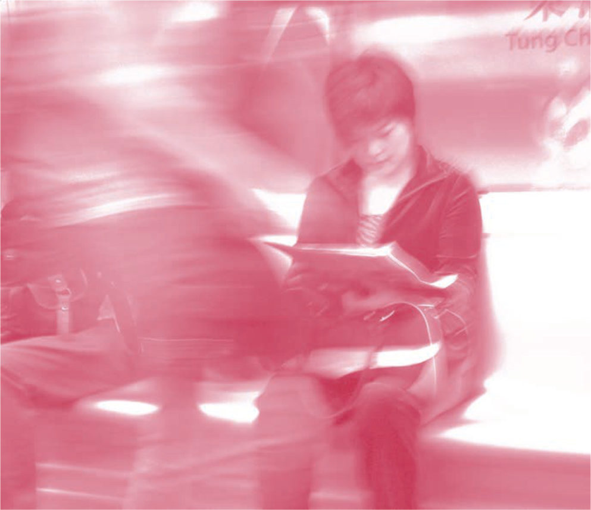
Motstånd och motstridiga agendor
Viss förändring kan kännas meningsfull och välkommen, och inblandade personer är då beredda att kavla upp ärmarna och/eller göra uppoffringar.
Plötslig, forcerad förändring där man har mindre överblick över möjliga konsekvenser (som pandemin), eller för att man inte vill hamna efter (som den exponentiella framväxten av generativ AI) medför en svårare resa, trots att den kan vara nödvändig. Vissa beter sig som grodor som långsamt kokar, medan andra hoppar ur vattnet med ett skutt.
Att befintliga strukturer inte längre har någon relevans eller står i motsats till den riktning vi behöver ta, betyder inte alltid att någon är beredd att ta itu med det som är trasigt – exempelvis klimatkrisen. Rot-orsakerna kan vara för sammanväxta eller ligga i någon del av systemet man inte (tror att man) kan påverka, eller så har man inte resurser, ork eller motivation.
Vi som påverkas av transformation har heller inte alltid så hög tolerans för förändringar som påverkar den levnadsstandard, de livsvillkor eller vinstmöjligheter vi är vana vid, och då kan politiker eller företagsledare undvika att agera för att inte skapa oönskat skav i människors vardag. I värsta fall har förändringarna skapat sämre levnadsvillkor och människor är mottagliga för förenklade budskap som i sig motverkar förändring.
Det nya skrämmer – därför klamrar vi oss fast
En viktig aspekt som kan stå i vägen är rädslan för det okända och för att förlora kontroll och makt i det nya paradigmet. Hela maktstrukturen i det befintliga systemet – nuvarande politiker, chefer, företagare – är rädda för att inte behövas eller kunna påverka på samma sätt i det nya paradigmet.
Till exempel ”kommer jag att behövas som chef om vi går mot självorganiserade team och samhällen i framtiden?”
En företagsägare kanske frågar sig: ”kommer jag att kunna utöva samma inflytande och få lika stor rikedom som idag om vi går mot mer deltagande ägar- och ledningsmodeller där medarbetarna är med och bestämmer hur de ekonomiska resurserna ska användas i företaget?”
Det kan också handla om en rädsla hos medarbetarna för att ta ett större ansvar och delta mer aktivt i beslutsprocesserna.
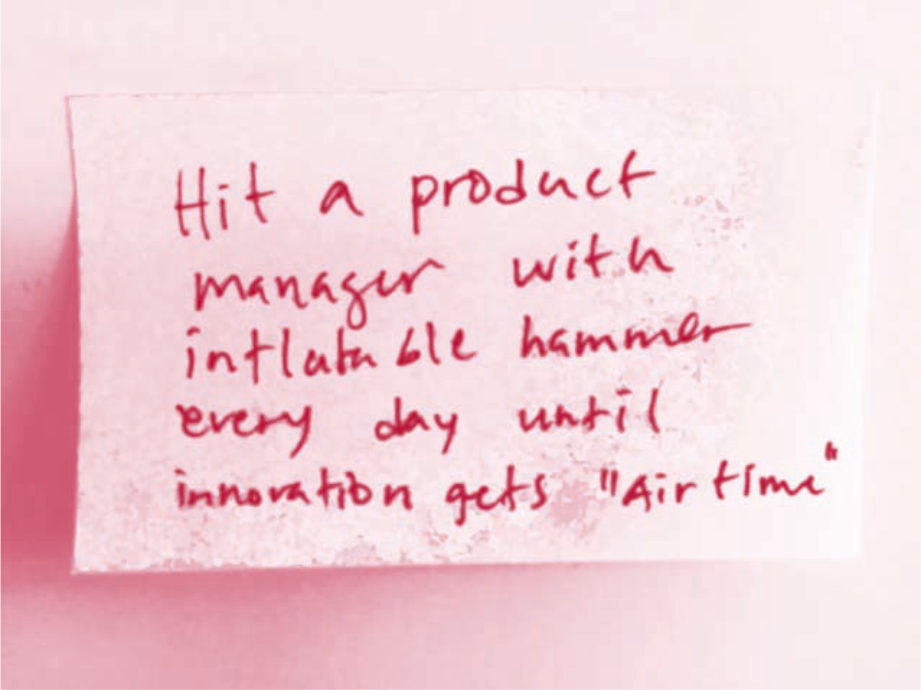
Tufft att göra annorlunda i ett befintligt system
Att bryta sig loss och göra saker annorlunda i ett befintligt system kan skapa en enorm glädje och driv. Man får göra något åt problemen, man får något att hända, men krokar arm! Samtidigt, beroende på vilken roll man befinner sig i, så kan man stöta på motstånd som nöter (motstånd mot idéer, mot hur man prioriterar, mot att man ifrågasätter). Vi har gett exempel på det i olika delar av boken.
- När transformationsaktiviteter är legitimerade och efterfrågade från högre ledning så kan det ändå finnas oförståelse i flera led för vad detta innebär i praktiken. Man kanske har fått en roll och en budget för att jobba med frågorna, men när etablerade logiker och därigenom strukturer, affärsmodeller och interna system börjar ifrågasättas som konsekvens av transformationsarbetet, så kan det skapas motstånd.
- När transformationsaktiviteter inte är legitimerade och efterfrågade så kan motståndet och oförståelsen vara desto mer kompakt, och man måste dessutom karva ut utrymme för att jobba med det nya. Dessutom riskerar man att bli uppfattad som illojal. Man kan riskera att bli klämd mellan sin passion, känslan av att något måste ske, och de faktiska förutsättningarna att alls kunna jobba med frågorna.
"Motstånd är en naturlig del av varje förändringsprocess och system
reagerar ofta som ett immunförsvar när det utmanas.
Transformativa ledare fokuserar på att förstå motståndets natur och
skapa utrymme för dialog och reflektion. Genom att engagera de passiva medhållarna och kommunicera tydligt, kan man minska
rädslan för förändring och bygga förtroende. Detta skapar trygghet och ökar chanserna för långsiktig framgång i komplexa system”.
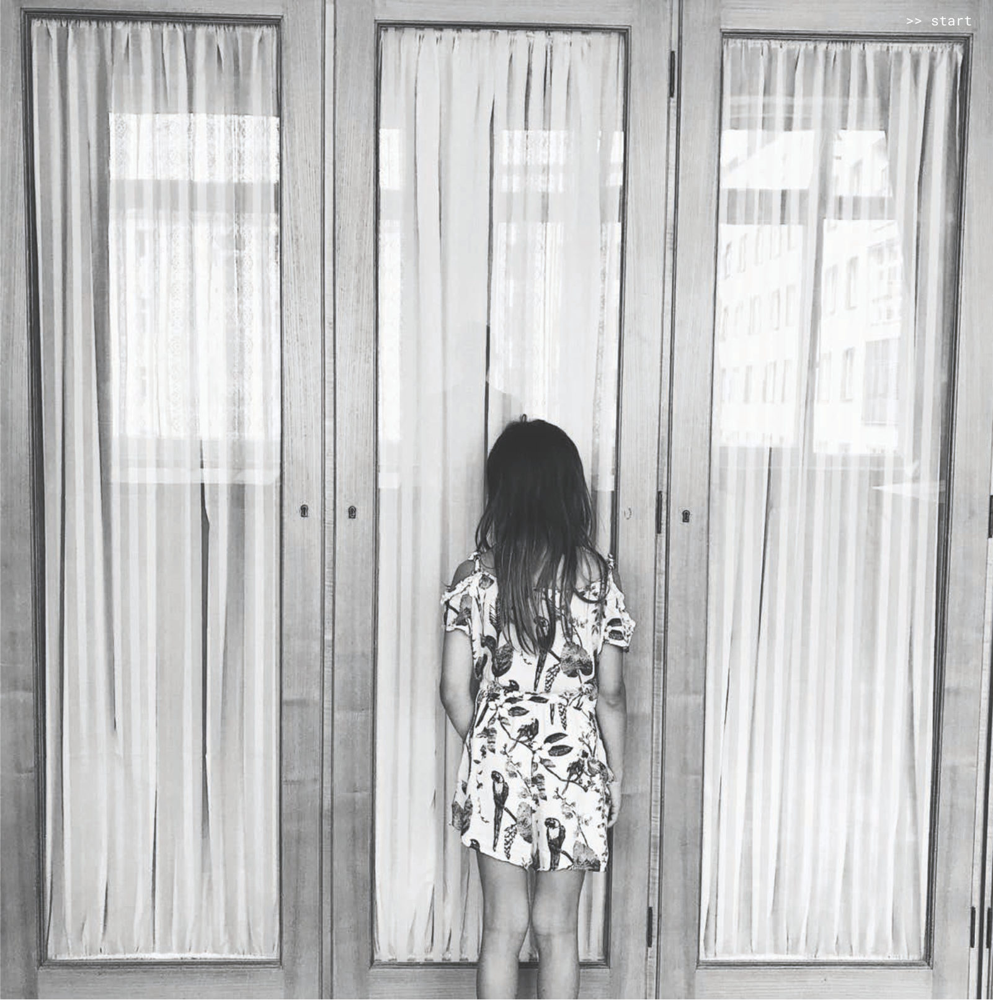
Transformation är inte neutralt – så vems agenda styr?
Transformation bär på en sprängkraft där ideologiska ståndpunkter, egenintresse och politik avgör hur man förhåller sig till förklaringsmodeller, ansvar och önskad riktning. Det kan handla om hur vi förstår och hanterar sånt som klimatomställning, segregation, ekonomisk orättvisa, kriminalitet eller demokratisk utveckling. På ett globalt plan; klimaträttvisa, migration, tävlingen om rymden, strömningar av post-sanning.
Vad uppfattar man ens som trasigt, viktigt och värt att prioriteras? Vem har och ges tolkningsföreträde, vem sätter det språk som har makt att definiera känslor och påverka beslut kring transformation? Vem räknas in i ”vi” eller ”oss”? Var sätts systemgränserna för vem som omfattas av solidaritet?
Vilket ansvar ska tas och vilka avkall ska göras av den enskilde, kollektivet, privat/offentlig sektor på olika nivåer, i olika delar av världen? Det är inte alltid självklart vem som sätter agendan och tar ansvar för att hantera (eller inte hantera) transformation på systemnivå.
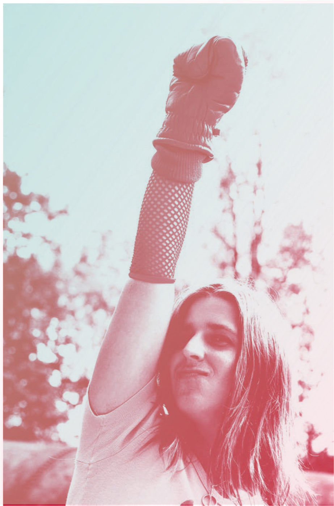
Meningsfulla sammanhang, relationer och tillit ger energi
Vi kan göra skillnad i en mängd olika roller
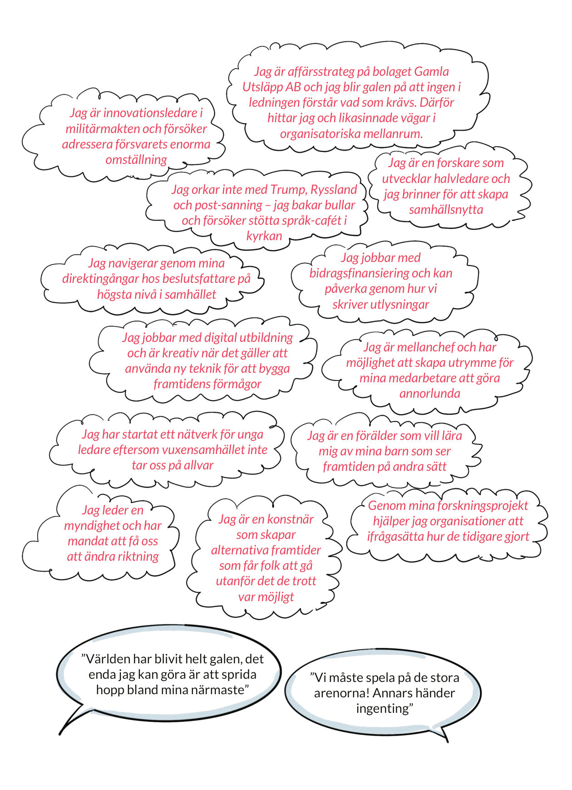
Jag är affärsstrateg på bolaget Gamla Utsläpp AB och jag blir galen på att ingen i ledningen förstår vad som krävs. Därför hittar jag och likasinnade vägar i organisatoriska mellanrum.
Jag är innovationsledare i militärmakten och försöker adressera försvarets enorma omställning
Jag orkar inte med Trump, Ryssland och post-sanning – jag bakar bullar och försöker stötta språk-cafét i kyrkan
Jag jobbar med digital utbildning och är kreativ när det gäller att använda ny teknik för att bygga framtidens förmågor
Jag är mellanchef och har möjlighet att skapa utrymme för mina medarbetare att göra annorlunda
Genom mina forskningsprojekt hjälper jag organisationer att ifrågasätta hur de tidigare gjort
Jag är en konstnär som skapar alternativa framtider som får folk att gå utanför det de trott var möjligt
”Världen har blivit helt galen, det enda jag kan göra är att sprida hopp bland mina närmaste”
Sammanhang som ger möjligheter till påverkan
Det är lätt att tänka att transformation måste ske inom organisationerna där vi jobbar eller på policynivå i samhället, men i själva verket händer den på alla plan samtidigt och vi kan vara delaktiga utifrån många roller. Att bli medveten om dessa ger större möjlighet till engagerande och meningsfull påverkan.
Vi rör oss i olika sammanhang där vi kan ha möjlighet till påverkan. Kanske är det på jobbet när du kämpar för att få in vissa ord i strategidokument eller ifrågasätter mätetal. Kanske hemma när du stöttar ditt barns konstnärliga utveckling. Kanske i friidrottsklubben där unga skolas i att ta ansvar och du kan prata om viktiga frågor med andra föräldrar.
Man får gräva där man står och använda sin roll, befogenhet, sitt inflytande, kontaktnät, och sina kompetenser. De sammanhang inom vilka vi kan och vill göra skillnad överlappar, ombildas, och våra roller i dem är i ständig förändring. Här är några exempel:
- Nära privat sfär: familj, vänner, grannar
- Civilsamhälle: föreningsliv. politiskt engagemang
- Professionell roll: Där vi har vårt dagliga värv, organisationen där vi jobbar, institutionen där vi utbildar oss, om driver eget, utövar konst, är folkvalda
- Mellanrum: samarbeten/samverkan utanför egna organisationen, formellt och informellt. Styrelseuppdrag, kommittéer etc.
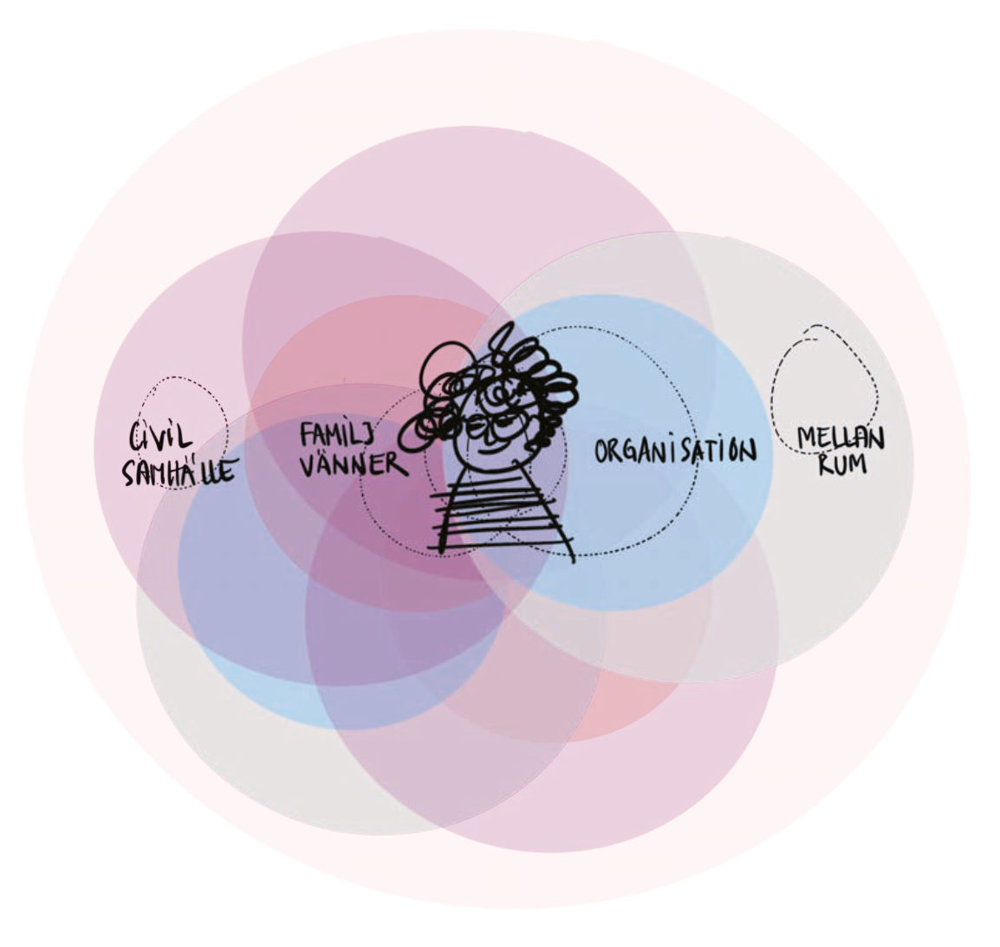
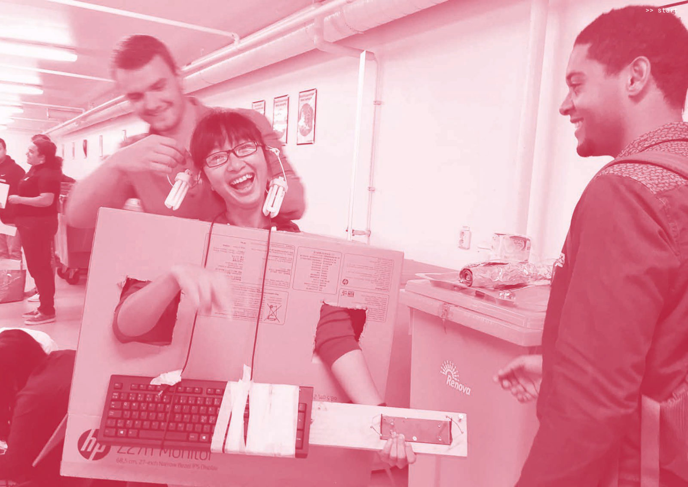
Fokusera på det som engagerar så att du orkar och tar med dig ditt driv. Jobba också på sätt som engagerar – och om ni tappar engagemang, vad kan ni göra för att bara ha lite kul och få tillbaka energin? Vad ger dig energi?
Vi pratar mycket om hur förändring växer fram gradvis, under tiden man jobbar med det som är otydligt (se mer i nästa kapitel). Men man kan också se transformation som en inre och social resa som också växer fram genom kontinuerliga omförhandlingar med sig själv och andra. En resa där ens kapacitet och vilja att agera förändras.
Vi lägger vår energi där vi tycker att något känns meningsfullt, och då står vi också bättre ut med motstånd och sånt som skaver.
Det som skapar en känsla av mening kan få en att söka sociala sammanhang med likasinnade för att uppnå mål. Men det går också åt andra hållet - nya typer av meningsfullhet och mål kan också uppstå genom att man deltar i ett socialt sammanhang.
Både som individ och i grupp handlar det om att utforska drivkrafter, motivation, var man har möjlighet och lust att jobba med (och slita för) förändring. Men också vad man själv har för behov. Vad behöver jag för att hålla? För att kunna bidra och få andra att må bra, för att vara kreativ?
I de sociala sammanhangen utvecklas egenskaper och möjligheter, men inte bara för mig som individ. Relationen mellan jaget och gruppen är viktig: När grupper agerar gemensamt kan nya egenskaper uppstå i gruppen i sig , som kollektivt distribuerad intelligens eller gemensam upplevelse.
Transformation som meningsfull resa och social
process
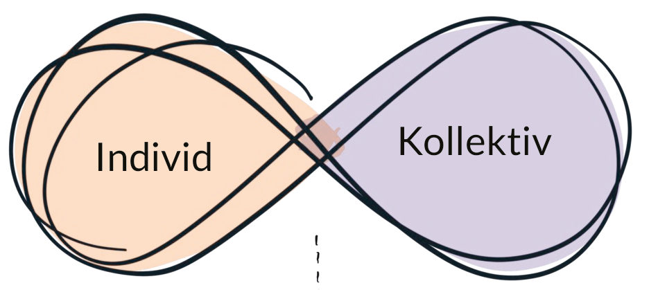
Riktning, roller och sammanhang omdefinieras och omförhandlas kontinuerligt
- Vad är min och våra roller i transformation, vem är jag och vi i förhållande till varandra?
- Hur vill jag/vi fortsätta, Vad behöver jag/vi för att agera, för att utvecklas?
Ett relationellt perspektiv - med tillit som grundförutsättning
Tillit handlar om både individer och organisationer. Tilliten kan vara till den egna förmågan och till andras, till transformationsprocessen, och till de institutioner som har inflytande och agens.
Tillit och mod går hand i hand, vilket är centralt för att montera ner och bygga upp, och för att våga ta täten. Tillit behövs för att bygga nödvändiga relationer för nya paradigm. När man vågar blotta sig och vara ärlig är det lättare att tillsammans förstå rotorsaker, komplexa samband och att hitta kreativa vägar framåt. Det gäller på individ - såväl som på organisations- och institutionsnivå.
Tillit hänger också nära ihop med trygghet – i ett psykologiskt tryggt klimat kan det vara lättare att hantera den ovisshet och det obehag som kan följa med transformation. En stor del av arbetet med att facilitera transformation handlar därför om att bygga och vårda tillit på olika plan.
”Ett företag valde att dela sina utmaningar öppet istället för att arbeta bakom stängda dörrar. Det resulterade i oväntade samarbeten och innovationer, vilket visade vilken kraft som finns i radikal öppenhet. Att våga vara öppen och nyfiken kan öppna dörrar till nya möjligheter, särskilt i en snabbt föränderlig värld."
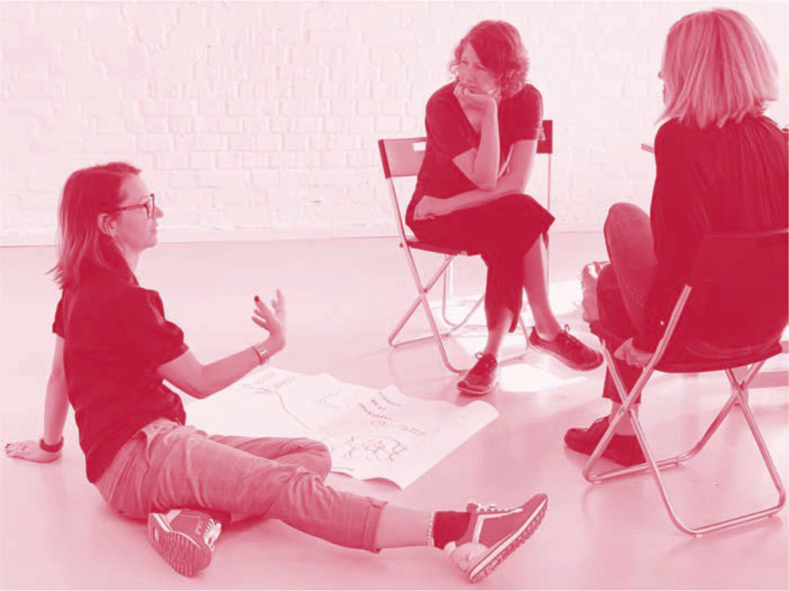
Exempel från praktiken
Relationsfokus i tidiga faser av cirkulär transformation
I det Vinnova-finansierade projektet Prototypa Digitala Cirkulära Affärsekosystem (PDCA,) utforskades den tidiga fasen av att bilda cirkulära affärsekosystem i ett faciliterat samarbete mellan tre stora aktörer inom systemet.
I en så här tidig fasen är i princip allting luddigt – det finns inga branschöverenskommelser, standarder för informationsdelning och ansvarsfördelning, ingen logistisk infrastruktur, ingen marknadsplats. Dessutom är nyproducerade byggelement eller material både billigare att köpa in och enklare att hantera enligt den gamla logiken, så i övergångsskedet måste det finnas andra incitament. Att gå från en linjär till en cirkulär affärsmodell kan strida mot hela den logik ens företag bygger på, och man måste kanske överge den affärsmodell man idag tjänar pengar på.
De pionjärer som engagerade sig i projektet kämpade därför mot oförståelse eller ovilja. De var också beroende av samlärande och att utforska möjligheter ihop med andra aktörer. Detta behövde också ske på ett trevande sätt där man delar kunskap, testar idéer och partnerskap, utan att veta vem som kommer vara en stark aktör (eller ens finnas) i det nya systemet. Flera var pressade av sina egna organisationer.
För att kunna få till både ett öppet utforskande och möjliga framtida partnerskap, låg fokus på att bygga upp förtroende, upprätthålla engagemang och skapa ett tryggt och kreativt utrymme för gemensamt lärande, utbyte av perspektiv och ärlig dialog.
Under de 18 månader som projektet pågick så var processen framför allt social och relationell, och det var viktigt att de som faciliterade tog hänsyn till denna dynamik. Att spela med öppna kort och släppa sitt eget fasta fokus i ett tidigt skede sågs som avgörande för att uppnå ömsesidigt förtroende. Samtidigt var alla deltagare medvetna om sina respektive intressen av att hitta möjligheter för de egna företagen, utöver de potentiella möjligheter som fanns i framtida samarbeten. Det var inte otänkbart att aktörerna kunde komma att konkurrera om samma roll i det framtida systemet. Därför var det viktigt att skapa förtroende och en respektfull balans.
Mot slutet kunde deltagarna dela med sig av ärliga frustrationer relaterade till cirkulär omvandling i sina företag och ge varandra råd om hur man kunde hantera dessa. Flera uttryckte vikten av den här relationsskapande delen av utforskande faser och hur den ofta glöms bort helt, både praktiskt och i forskning om cirkulär transformation. Att springa rakt på den konkreta bollen för att jaga möjligheter kan skapa otålighet och missförstånd, - och missade möjligheter.
BTS ARMY: Kollektiv omtanke - när fanskaran blir en förändringskraft
BTS (방탄소년단Bangtan Sonyeondan) är en sydkoreansk musikgrupp som sedan starten 2013 vuxit till ett globalt fenomen. Genom känsloladdade texter, inkluderande budskap och stark närvaro i sociala medier, har de byggt en nära och lojal relation till sin publik. Fansen, kallade ARMY (”Adorable Representative M.C. for Youth”, uppskattade till mellan 50 och 80 miljoner medlemmar), är idag mer än ett fan-community – de är en global, mångfacetterad rörelse som spänner över generationer, språk och nationella gränser.
I en digital värld där många upplever internet som hårt, tomt, ytligt eller splittrande, har ARMY format något annat: en gemenskap präglad av omsorg, tillhörighet och emotionellt stöd.
Genom sociala medier har de samskapat ett mjukare rum online, där det är tillåtet att visa känslor, uttrycka uppskattning och stå upp för varandra. Genom omsorgsfulla interaktioner, delade normer och viljan att lyfta varandra, visar ARMY hur digitala rum kan bli platser där omtanke blir handling, och gemenskap ett aktivt val.
ARMY har också utvecklat en förmåga till självorganisering. När BTS donerade en miljon dollar till Black Lives Matter 2020, tog det bara 25 timmar för fanskaran ARMY att samla in lika mycket genom kampanjen #MatchAMillion – utan någon uppmaning från själva bandet. Initiativet koordinerades av det frivilliga nätverket One In An ARMY, som tillhandahöll tydliga mål, delningsbart material och enkla verktyg för deltagande.
Forskare har nyligen visat hur ARMYs struktur liknar ett livskraftigt system, där olika roller – som översättare, kampanj-konton och medieproducenter – samverkar utan central styrning, men med tydlig effektivitet. Den starka samhörigheten i nätverket bygger på att människor med liknande värderingar och intressen söker sig till varandra. Detta skapar hög tillit och snabb spridning av information över gränser.
ARMY är inte bara fans – de är en kulturell kraft. Deras organisering illustrerar en ny typ av global påverkan och kulturell sammanhållning, där digital infrastruktur, emotionell samhörighet och kollektiva handlingar samverkar. Det är ett exempel på hur förändring kan börja i det oväntade – men få kraft genom sammanhang där människor känner igen sig i varandra, där omtanke står i centrum och där kulturen bär på systempåverkande potential.


Analog och genuin längtan i en digital tid – början på en mjuk revolt?
Vi ser ett tydligt skifte bland unga, inte minst bland unga kvinnor och icke-binära som söker andra vägar: bort från perfektion – mot närvaro, mening och gemenskap. En trötthet på ytliga ideal och det perfekta Instagram-livet börjar bli påtaglig.
Freya India, en generation Z*-skribent som har uppmärksammats i the Guardian, the Atlantic och New York Times, skriver träffsäkert och lyhört om unga människors längtan efter mening, sårbarhet och verklig närvaro*. Hon visar hur denna längtan – mitt i en digital tidsålder – kan bli en drivkraft för gemenskap och förändring. Det handlar om att återknyta till något mänskligt, och där kan en ny sorts rörelse ta form.
74 % av unga känner stress över skärmtid*. Allt fler väljer att kliva ur flödet och in i något annat – naturen, vänskap, analoga aktiviteter, spiritualitet. Clean girl-estetikens släta yta ersätts av stökigare, ärligare uttryck. DIY (Do It Yourself), grunge och second hand blandas med handskrivna dagböcker och knapptelefoner. Det analoga blir trendigt – men också meningsfullt. I musik och andra kulturyttringar får de unga dela känslan av mening. Intresset för andlighet och tro ökar, särskilt bland unga kvinnor.
Exempel: Artister och influencers som Billie Eilish och Charli XCX står för en annan rörelse än den vi sett de senaste åren. De skalar av, vågar vara sårbara, dansar i mjukisshorts. När tusentals unga på Billies Europaturné 2025 ropar att de älskar henne, är det inte för att hon glänser i snygga klädbyten eller avancerad scenteknik., Det är för att hon får dem att känna. För att de identifierar sig, för att hon erkänner det svåra i att vara ung människa idag, men samtidigt talar om hopp. Om hur vi kan hjälpas åt med klimatutmaningar, om hur det är att vara ung tjej i USA idag. Det är mitt i transformationen.
Det här är – medvetet eller inte – en motrörelse mot samtidens hårda ideal. En viskning mitt i allt skrik. I en värld där makt ofta har mansröst och muskler, väljer många unga något annat: det mjuka, det gemensamma, det ofiltrerade.
Det finns något djupt paradoxalt här. Samma generation som vuxit upp helt uppkopplad, drömmer nu om tystnad och tillhörighet. Det är en stillsam revolution pågående på skogsstigar, i syjuntor, i terapi-rum och vinylskivbutiker. Och den påminner oss alla om att mitt i det ständiga bruset finns det något ovärderligt i att då och då stanna upp, andas in, och återknyta till något grundläggande.
Medan BTS ARMY är en globalt uppkopplad rörelse byggd på tillit, är den jordnära, analoga längtan hos unga av en annan frekvens – men den klingar i samma tonart: en längtan efter mening, äkthet och gemenskap.
Det som förenar dem är att båda är uttryck för omsorg, samhörighet och kollektiv potential – bara genom olika kanaler. Denna längtan efter närvaro och verklig kontakt bär kanske fröet till ett kulturellt skifte mot djupare, verkliga relationer igen.
Som Freya India observerat, finns här en stark möjlighet: när unga börjar agera utifrån sårbarhet och gemenskap, pekar de kanske mot nästa fas av systemisk transformation.
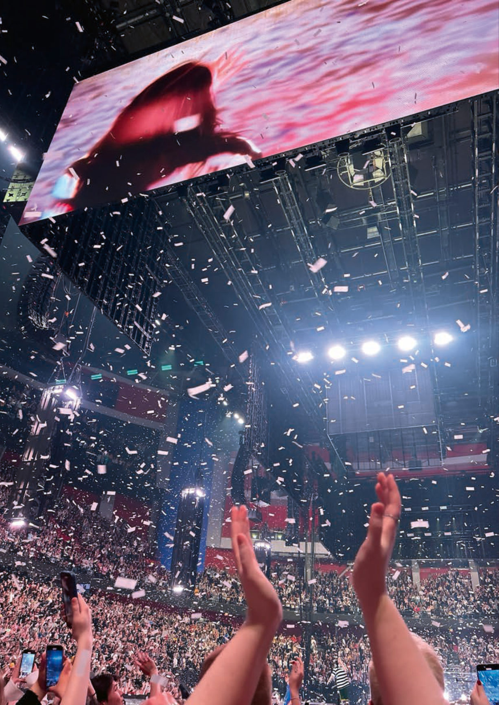
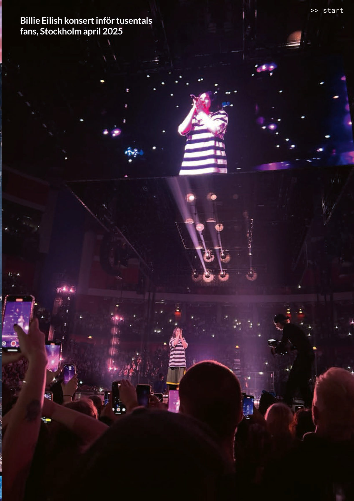
Exempel från praktiken
”När vi pratade med en grupp unga ledare kring framtidens utmaningar, beskrev en deltagare hur hon kände sig fast mellan hopp och förtvivlan. Jag ser potentialen i vad vi kan åstadkomma, men ibland känns det som att vi bara springer runt i cirklar.
Det vi behöver är fler platser där vi kan prata om detta – där det inte handlar om att hitta lösningen direkt, utan om att förstå och
bearbeta vad vi står inför. Det blev en påminnelse om vikten av samtal som inte bara är praktiska, utan också känslomässiga och reflekterande."
Reflektionsfrågor – människor i systemkontext
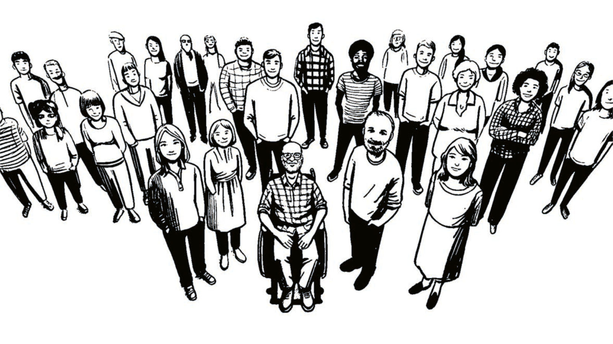